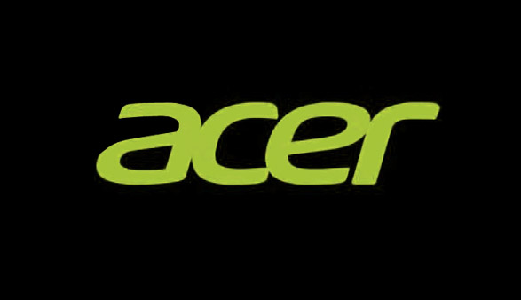

ACER
Es una empresa taiwanesa fabricante de computadoras y productos informáticos. Es el cuarto mayor fabricante de computadoras a nivel mundial y la mayor empresa de venta al por menor de computadoras en Taiwán.
La oferta de productos de Acer abarca los PC, servidores y almacenamiento, monitores, periféricos y soluciones de presencia en Internet para empresas, gobierno, educación, y usuarios domésticos.
Multitech, una empresa que fue fundada en 1976 por Stan Shih, cambió de nombre, pasando a llamarse Acer en 1981. El grupo Acer emplea a 39 000 personas, incluidos distribuidores y personal de servicio técnico, en unos 100 países. Los réditos alcanzaron en los Estados Unidos 12 900 000 000 $ en 2002. La sede de la empresa está en la ciudad de Hsichih, condado de Taipéi, Taiwán.
El subsidiario de Acer en Australia es Acer Computer Australia, que además de ser el número 3 en el mercado total de ordenadores de escritorio y portátiles, es el principal vendedor en los segmentos dominantes tales como gobierno y educación.